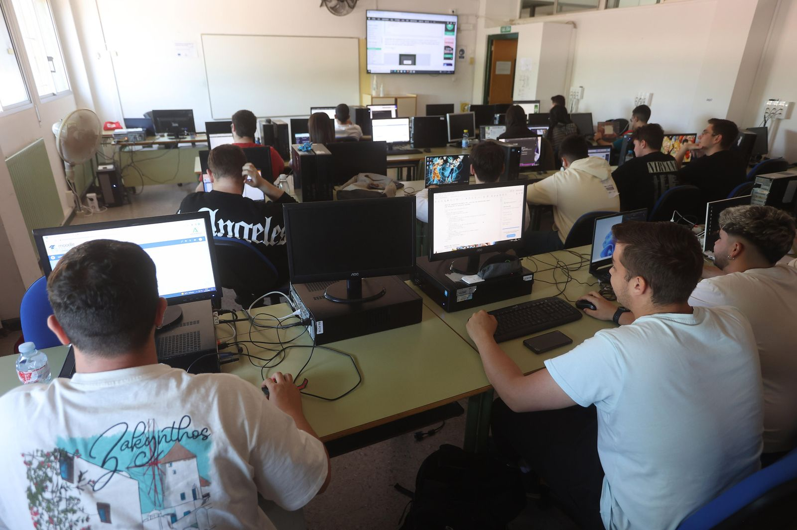

Ubicación: Calle de Sánchez Cotán, S/N, 41980 La Algaba, Sevilla
Duración total: 2000 horas (repartidas en 2 cursos académicos)
Modalidad: FP Dual / Presencial
Este ciclo formativo capacita para desarrollar, implantar, documentar y mantener aplicaciones informáticas multiplataforma, garantizando el acceso a los datos de forma segura y optimizando la experiencia de usuario en dispositivos móviles y de escritorio.
Preparación, configuración y mantenimiento de entornos y sistemas informáticos necesarios para el desarrollo.
Diseño y edición de bases de datos relacionales utilizando lenguajes DDL, DML y consultas SQL.
Comprensión, diseño y desarrollo de código avanzado utilizando Programación Orientada a Objetos.
Uso de entornos integrados, desarrollo de pruebas unitarias, refactorización y control de calidad del software.
Diseño, edición y estructuración de documentos web utilizando tecnologías como HTML y CSS.
El centro cuenta con acreditación para programas de movilidad europea y formación avanzada.

Para conocer las últimas novedades, plazos de escolarización y actividades del instituto, visita el blog oficial: